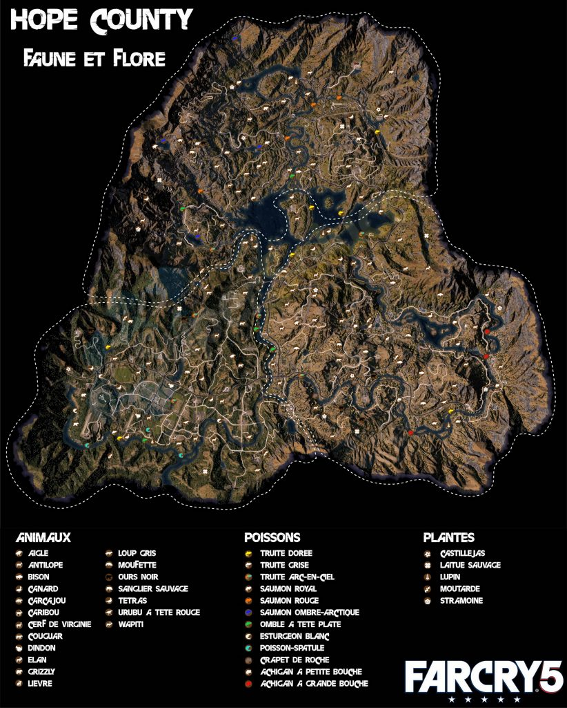

A Far Cry 5 egy lenyűgöző, változatos területet kínál játékosainak, mely az amerikai Montana állam vidékét öleli
fel. A térkép széles skálájú környezeteket kínál, beleértve a hegyeket, erdőket, mezőket és városokat is. A Hope
County nevű terület a játék fő helyszíne, melyben a játékosok felfedezhetik a szabadon járható területeket,
településeket, és részt vehetnek különféle küldetésekben. A folyók és tavak átszövik a tájat, adnak lehetőséget
hajózásra és halászásra, miközben a hegyek kihívást jelentenek az expedíciók és a vadászat során. A térkép
minden sarkában rejtett gyöngyszemek és veszélyek várnak, így felfedezése sosem lesz unalmas.
